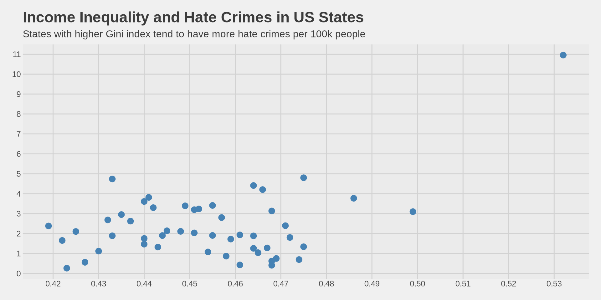
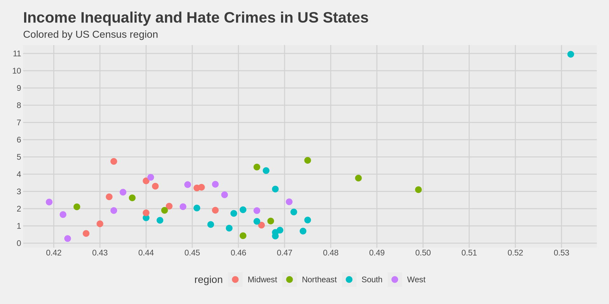
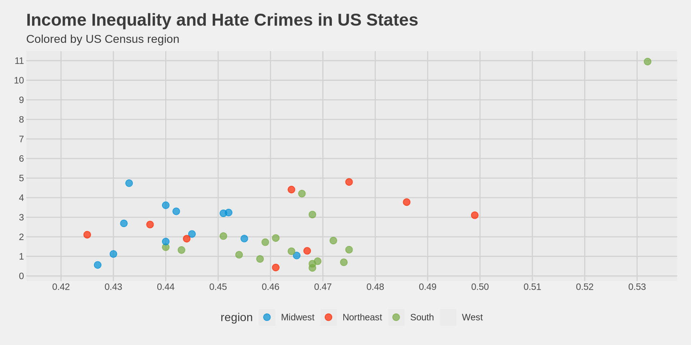
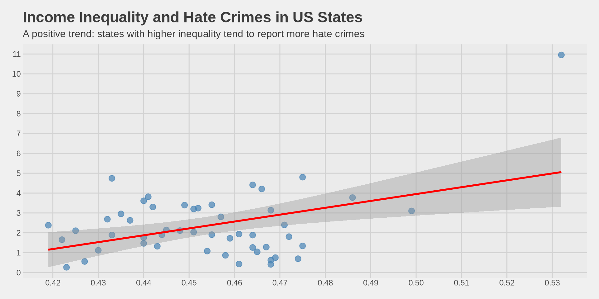
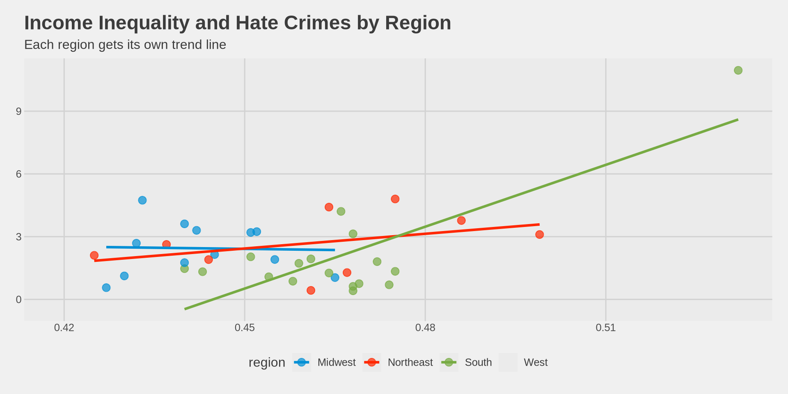

- 1
- Use the tidyverse, janitor, and ggthemes libraries
- 2
- Read the CSV file and then do the following ( %>% )
- 3
-
Show it as a
tibbleand save it ashate_crimes
Scatter Plots & Relationships
What we learned so far
Recap
We learned how to visualize the distribution of one continuous variable.
Histogram: groups data into bins, counts how many observations fall in each bin.
Density plot: estimates a smooth curve representing the distribution.
We also learned how to compare distributions across groups (e.g., income by gender).
But what if we want to ask a different kind of question?
“Is there a relationship between two variables?”
New Question
In Week 3 we asked: “How is income distributed?” → one variable.
This week we ask: “Does income inequality relate to hate crime rates?” → two variables.
When we want to see the relationship between two continuous variables, we use a scatter plot.
When to use a scatter plot?
You have two continuous variables.
You want to see if there is a pattern, trend, or correlation between them.
Each observation (row) becomes one point on the plot.
The
xaxis shows one variable, theyaxis shows the other.
Our Data: Hate Crimes in the US
The Data
Our data comes from a FiveThirtyEight article:
- “Higher Rates Of Hate Crimes Are Tied To Income Inequality”
It contains data on all 50 US states.
For each state we have:
hate_crimes_fbi: hate crimes per 100,000 people (reported to FBI)gini_index: a measure of income inequality (higher = more unequal)median_income: median household incomehighschool: share of population with a high school degreeunemployment: share of unemployed populationtrump_vote: share of voters who voted for Trump in 2016region: US Census region (Northeast, Midwest, South, West)
Read the data
Have a look at the data
# A tibble: 50 × 13
state median_income unemployment metro_pop highschool non_citizen
<chr> <int> <dbl> <dbl> <dbl> <dbl>
1 Alabama 42278 0.06 0.64 0.821 0.02
2 Alaska 67629 0.064 0.63 0.914 0.04
3 Arizona 49254 0.063 0.9 0.842 0.1
4 Arkansas 44922 0.052 0.69 0.824 0.04
5 California 60487 0.059 0.97 0.806 0.13
6 Colorado 60940 0.04 0.8 0.893 0.06
7 Connecticut 70161 0.052 0.94 0.886 0.06
8 Delaware 57522 0.049 0.9 0.874 0.05
9 District of Colu… 68277 0.067 1 0.871 0.11
10 Florida 46140 0.052 0.96 0.853 0.09
# ℹ 40 more rows
# ℹ 7 more variables: white_poverty <dbl>, gini_index <dbl>, non_white <dbl>,
# trump_vote <dbl>, hate_crimes_splc <dbl>, hate_crimes_fbi <dbl>,
# region <chr>Understanding Our Data
What are our variables?
state median_income unemployment metro_pop
Length:50 Min. :35521 Min. :0.02800 Min. :0.3100
Class :character 1st Qu.:48358 1st Qu.:0.04225 1st Qu.:0.6300
Mode :character Median :54613 Median :0.05100 Median :0.7900
Mean :54904 Mean :0.04988 Mean :0.7500
3rd Qu.:60653 3rd Qu.:0.05775 3rd Qu.:0.8975
Max. :76165 Max. :0.07300 Max. :1.0000
highschool non_citizen white_poverty gini_index
Min. :0.7990 Min. :0.01000 Min. :0.0400 Min. :0.4190
1st Qu.:0.8397 1st Qu.:0.03000 1st Qu.:0.0800 1st Qu.:0.4400
Median :0.8740 Median :0.04000 Median :0.0900 Median :0.4545
Mean :0.8684 Mean :0.05404 Mean :0.0922 Mean :0.4542
3rd Qu.:0.8978 3rd Qu.:0.08000 3rd Qu.:0.1000 3rd Qu.:0.4667
Max. :0.9180 Max. :0.13000 Max. :0.1700 Max. :0.5320
NA's :3
non_white trump_vote hate_crimes_splc hate_crimes_fbi
Min. :0.0600 Min. :0.0400 Min. :0.06745 Min. : 0.2669
1st Qu.:0.1925 1st Qu.:0.4200 1st Qu.:0.14271 1st Qu.: 1.2931
Median :0.2750 Median :0.4950 Median :0.22620 Median : 1.9871
Mean :0.3058 Mean :0.4938 Mean :0.30409 Mean : 2.3676
3rd Qu.:0.4200 3rd Qu.:0.5775 3rd Qu.:0.35693 3rd Qu.: 3.1843
Max. :0.6300 Max. :0.7000 Max. :1.52230 Max. :10.9535
NA's :3
region
Length:50
Class :character
Mode :character
Understanding Our Data
Non-numeric variable: region
- We have 4 regions, each with a different number of states.
Our Goal Today
Is there a relationship between income inequality and hate crimes?
gini_indexmeasures income inequality. Higher values = more inequality.hate_crimes_fbimeasures hate crimes per 100,000 people.We want to see: do states with more inequality also have more hate crimes?
Both variables are continuous → we need a scatter plot.
Building a Scatter Plot Step by Step
Step 1: Start with the data
Take our data set named hate_crimes,
I want to make a visualization, take my data set and apply ggplot.

Step 2: Set the axes
Now we need to tell R what goes on the x axis and what goes on the y axis.
For scatter plots we need both x and y inside aes().
x = gini_index(income inequality)y = hate_crimes_fbi(hate crimes per 100k)
Step 3: Add the points
Remember, for histograms we used geom_histogram(), for density we used geom_density().
For scatter plots we use geom_point().
Each row in our data becomes one point on the plot.
Step 4: Add a theme
Lets immediately clean it up with a theme.
Step 5: Customize the points
The default points are small and hard to see. We can change them inside geom_point():
size= how big the points are (default is about 1.5)color= the color of the points
Step 6: Fix the axes
Like in Week 3, lets increase the number of values on both axes.
Interpreting the scatter plot
What do we see?
- As
gini_indexincreases (more inequality), hate crimes tend to increase too. - This suggests a positive relationship between income inequality and hate crimes.
- As
But not all states follow this pattern perfectly.
- Some states have high inequality but low hate crimes.
- Some states have low inequality but high hate crimes.
- This is normal — we are looking at a trend, not a perfect rule.
There is one point very high up — can you guess which state that might be?
# A tibble: 1 × 13
state median_income unemployment metro_pop highschool non_citizen
<chr> <int> <dbl> <dbl> <dbl> <dbl>
1 District of Colum… 68277 0.067 1 0.871 0.11
# ℹ 7 more variables: white_poverty <dbl>, gini_index <dbl>, non_white <dbl>,
# trump_vote <dbl>, hate_crimes_splc <dbl>, hate_crimes_fbi <dbl>,
# region <chr>Add labels
Now lets add a title, subtitle, and axis labels using labs().
hate_crimes %>%
ggplot() +
aes(x = gini_index, y = hate_crimes_fbi) +
geom_point(size = 3, color = "steelblue") +
scale_x_continuous(n.breaks = 10) +
scale_y_continuous(n.breaks = 10) +
labs(
title = "Income Inequality and Hate Crimes in US States",
subtitle = "States with higher Gini index tend to have more hate crimes per 100k people",
x = "Gini Index (Income Inequality)",
y = "Hate Crimes per 100,000 (FBI)"
) +
theme_fivethirtyeight()Add labels

Coloring Points by a Group
Color by region
Remember in Week 3 we changed the
colorof density lines based ongender?We can do the same thing here: color the points based on
region.Since
regionis a variable, we put it insideaes(), not insidegeom_point().
Can you guess the code?
Color by region
We move color from geom_point(color = "steelblue") to aes(color = region):
hate_crimes %>%
ggplot() +
aes(x = gini_index, y = hate_crimes_fbi, color = region) +
geom_point(size = 3) +
scale_x_continuous(n.breaks = 10) +
scale_y_continuous(n.breaks = 10) +
labs(
title = "Income Inequality and Hate Crimes in US States",
subtitle = "Colored by US Census region",
x = "Gini Index (Income Inequality)",
y = "Hate Crimes per 100,000 (FBI)"
) +
theme_fivethirtyeight()
What do we see?
The South (red/pink) tends to cluster in the lower-right: high inequality, but lower FBI-reported hate crimes.
The Northeast tends to have higher hate crime rates.
Does this mean the South has fewer hate crimes? Not necessarily — it could mean different reporting practices across regions.
This is an important lesson: correlation does not mean causation, and data quality matters!
Try it yourself!
Now it is your turn. Using the same
hate_crimesdata:- Make a scatter plot of
median_income(x axis) vshate_crimes_fbi(y axis). - Color the points by
region. - Add a nice theme.
- Add a title and axis labels.
- What pattern do you see? Do richer states have more or fewer hate crimes?
- Make a scatter plot of
Making Points Transparent
The alpha argument
Sometimes points overlap and we cannot see how many points are in the same area.
We can make points semi-transparent using
alphainsidegeom_point().alpha = 1means fully solid (default),alpha = 0means invisible.
hate_crimes %>%
ggplot() +
aes(x = gini_index, y = hate_crimes_fbi, color = region) +
geom_point(size = 3, alpha = 0.7) +
scale_x_continuous(n.breaks = 10) +
scale_y_continuous(n.breaks = 10) +
labs(
title = "Income Inequality and Hate Crimes in US States",
subtitle = "Colored by US Census region",
x = "Gini Index (Income Inequality)",
y = "Hate Crimes per 100,000 (FBI)"
) +
theme_fivethirtyeight() +
scale_color_fivethirtyeight()
Adding a Trend Line
What is a trend line?
A scatter plot shows us the individual data points.
But sometimes it is hard to see the overall pattern just from the points.
A trend line (also called a regression line or line of best fit) helps us see the general direction of the relationship.
If the line goes up → positive relationship (as x increases, y increases).
If the line goes down → negative relationship (as x increases, y decreases).
If the line is flat → no clear relationship.
Adding a trend line with geom_smooth()
We use geom_smooth() to add a trend line on top of our scatter plot.
We add method = "lm" inside geom_smooth() to get a straight line. lm stands for linear model.
Understanding the trend line
The blue line shows the overall trend: as inequality increases, hate crimes tend to increase.
The gray shaded area around the line shows the confidence interval — it tells us how uncertain the trend is.
- A narrow band means we are more confident.
- A wide band means we are less confident.
We can remove the confidence interval with
se = FALSE:
Putting it all together
hate_crimes %>%
ggplot() +
aes(x = gini_index, y = hate_crimes_fbi) +
geom_point(size = 3, color = "steelblue", alpha = 0.7) +
geom_smooth(method = "lm", se = TRUE, color = "red") +
scale_x_continuous(n.breaks = 10) +
scale_y_continuous(n.breaks = 10) +
labs(
title = "Income Inequality and Hate Crimes in US States",
subtitle = "A positive trend: states with higher inequality tend to report more hate crimes",
x = "Gini Index (Income Inequality)",
y = "Hate Crimes per 100,000 (FBI)"
) +
theme_fivethirtyeight()Putting it all together

Trend line by group
What happens if we add color = region back into aes()?
hate_crimes %>%
ggplot() +
aes(x = gini_index, y = hate_crimes_fbi, color = region) +
geom_point(size = 3, alpha = 0.7) +
geom_smooth(method = "lm", se = FALSE) +
labs(
title = "Income Inequality and Hate Crimes by Region",
subtitle = "Each region gets its own trend line",
x = "Gini Index (Income Inequality)",
y = "Hate Crimes per 100,000 (FBI)"
) +
theme_fivethirtyeight() +
scale_color_fivethirtyeight()
Trend line by group
When
color = regionis insideaes(), bothgeom_point()andgeom_smooth()split by region.Each region gets its own points and its own trend line.
This is useful to see if the relationship is different across groups.
The relationship direction varies by region — another reason to be careful about making conclusions!
Summary
What we learned today
Scatter plot: shows the relationship between two continuous variables using
geom_point().Building a scatter plot:
ggplot()→ blank canvasaes(x = ..., y = ...)→ set both axesgeom_point()→ add the points- Customize with
size,color,alpha labs()→ add title, subtitle, axis labels
Color by group: put
color = variableinsideaes()to color points by a categorical variable.Trend line:
geom_smooth(method = "lm")adds a line of best fit.Key takeaway: Correlation does not imply causation! Just because two variables move together does not mean one causes the other.
Exercise
Using the hate_crimes data, explore one of these questions:
- Is there a relationship between
unemploymentandhate_crimes_fbi? - Is there a relationship between
highschool(education) andhate_crimes_fbi? - Is there a relationship between
median_incomeandgini_index?
For each:
- Make a scatter plot with
geom_point() - Add a trend line with
geom_smooth(method = "lm") - Color by
region - Add a title and axis labels
- Interpret: what does the plot tell you?
Week 4 - English